Creator 的说明书
前言
Creator入坑指南
一、痛点分析
如果你用Microsoft Word写过长篇大论，那你一定有这样的经历：
想删除一个段落，又怕将来想恢复找不回来怎么办？有办法，先把当前文件“另存为……”一个新的Word文件，再接着改，改到一定程度，再“另存为……”一个新文件，这样一直改下去，最后你的Word文档变成了这样：
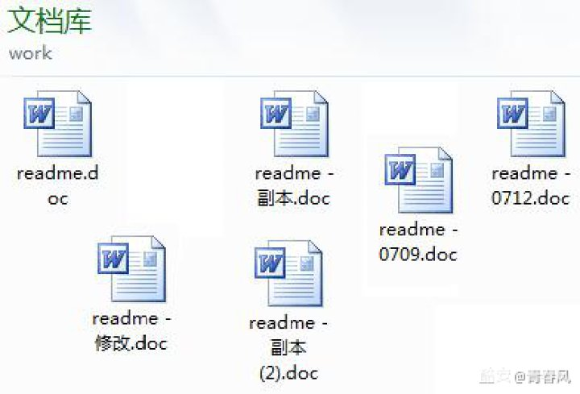
过了一周，你想找回被删除的文字，但是已经记不清删除前保存在哪个文件里了，只好一个一个文件去找，真麻烦。
看着一堆乱七八糟的文件，想保留最新的一个，然后把其他的删掉，又怕哪天会用上，还不敢删，真郁闷。
于是你想，如果有一个软件，能自动帮我记录每次文件的改动，这样就不用自己管理一堆类似的文件了。如果想查看某次改动，只需要在软件里瞄一眼就可以，岂不是很方便？
注：节选自廖雪峰的博客（点击查看）。
或许你听说过，Linux之父做了一个叫做Git的东西，成就了今天的Github、Gitee这些支持版本控制的平台。
什么叫版本控制呢，简单说就是将具有相似内容的文件进行分类，只保留一个当前版本，其余的全部流入历史文件。你可以查看该文件的历史版本，以便取出并覆盖为当前版本。
OK，那我用Git的思想去管理文档不挺好吗？Creator的书堆（Stacks目录）功能，便等同于Git的当前版本。
继续分析Git那些历史文件。
在Creator里对应的是什么呢？叫做存储（FlySave目录）。点击存储按钮，便可将当前的文章内容存储为一个自定义历史版本文件。通过不断地点击存储，你便可以得到大量特定历史版本的文章。
你可能要问，能不能把编辑器的撤销、重做也改一下，即便是重新打开这篇文章，仍然可以恢复使用上次编辑时的撤销、重做功能。毕竟如果Word支持这个的话，基本就用不到Git了。
既然说到这里了，咱们聊聊常规软件的自动保存功能吧：
你用键盘输入A-Z（一次性粘贴过来），并依次删除末尾的一个字母，直到只剩下一个字母A，然后你退出软件了。我们已经说清楚前提了：支持自动保存。所以当你再次打开这篇文章时，只能看见一个字母A，后边曾经写过什么，你不知道。
Creator自然支持这个模式，回溯模式点击左上角文章按钮，看到的文章列表就是这种模式保存的文件（Creator目录）。
为什么说是自动保存，而不是定时保存？因为输入框监听了文本变化，一旦内容发生变化，就立马将变化后的文本写入一个固定名字的文件，然后不断地用新文本去覆盖该文件。
好了，原理搞清楚了，那我搞个地表最强的自动保存：
把每一次变化后的文本都写入不同名字的新文件（History目录），拿毫秒级时间戳作为文件名，既不会出现重名，也解决了按时间排序的问题。
所以当我打开文本内容为A的文章时，它自带26个历史版本+1个当前版本。第一个版本内容是A-Z（一次性粘贴过来的，所以初始版本就是这个），第二个版本内容是A-Y，以此类推，最后一个版本的内容是A（没错，“当前版本”其实就是最后那个历史版本）。足够打通撤销、重做功能啦！
二、构架设计
Creator的主界面必须是编辑文章用的，因为主打编辑文本。而输入框里的每一次内容变化，都会被衍生出来新的文件（版本分支），所以如果要翻阅书堆文章或查找文章的历史版本，就要脱离这个主界面，Creator为此做了无痕只读和 回溯模式。
回溯模式
主界面菜单->回溯模式，然后通过左上角的文章按钮，会展示一个列表，你编辑的每一篇文章都在这里（Creator目录）。
注：
移除了的除外。
你可以选择一篇文章，或点击左下角的回退、前进（上/下篇文章）来找到所需文章。
点击顶部中间的文本框，便可以看到该文章的全部历史版本（History目录）。可以点击右上角的回溯按钮，按钮内容变为跃点，这时候点击顶部文章标题，便可显示该文章的自定义历史版本（FlySave目录）
前提是点击过“存储”按钮。
长按右上角跃点（或回溯），提示查看历史版本，然后左下角的回退、前进就改成加载该文章的上/下个历史版本，找到该文章所需的历史版本即可。
注：再次长按右上角
跃点（或回溯），提示加载文章列表，然后左下角的回退、前进就恢复成查看上/下篇文章的功能了。
找到文章的所需历史版本后，可以进行归档。
举例：
长按顶部中间的文本框，输入文章名称作息时间。点击底部目录，新建一个书堆。
如果需要嵌套多层级的书堆，用/隔开，如：User/日常。
点击底部的书堆、选择User，再次点击书堆、选择日常，然后存档即可，便会在User下的日常书堆里创建一个叫做作息时间.txt的文件，内容就是当前的文章内容。
注：选择（进入）了哪个书堆，存档时就把文章存到了哪个书堆。
无痕只读
有时候我们会录入一些比较重要的内容，“归档”后就去回溯模式里移除掉了自动保存的文件。
如果我要查看归档了的这篇书堆文章，不希望在打开文章后自动衍生分支版本，而仅仅是阅读或选取复制一些文字，那就使用菜单->无痕只读。
和主界面一样，点击左上角书堆按钮，能够展示当前路径有哪些书堆，点击便可进入。
注：长按
书堆可回退到根目录。
也和主界面一样，点击顶部中间的文本框便可展示当前书堆里有哪些文章。长按顶部中间的文本框则是设置文章标题。
左下角和回溯模式一样，也有回退、前进，用于查看上/下篇文章。
同样支持新建书堆、选择书堆（即要归档的路径）、归档（覆盖同名文件时会有提示）。
这个模式也可以用于无痕编辑文章，不会自动保存文件、衍生历史版本，如果真的不需要这两个功能，可以这么搞。但如果编辑一半却把软件后台杀了，等着哭鼻子吧。个人认为，越是重要的文件，越需要上边那两个功能。
悬浮手记
切换模式
菜单->悬浮手记，就可以切换到悬浮窗模式了。
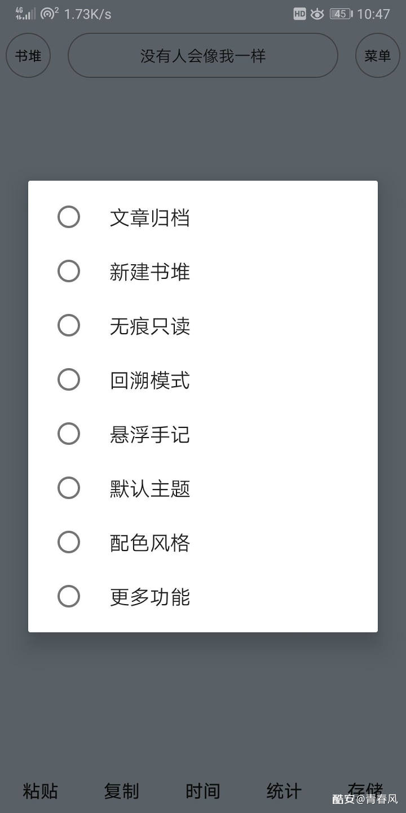
需要注意的是，悬浮输入框和软件主界面不互通，这是一个独立的工具。
大部分情况下用悬浮窗时不会连续写太多文字（比如一万字），而且像录视频教程之类的，没必要把输入的内容保存成文件，所以没有搞自动保存。
悬浮窗能够被系统保活，基本上手机不息屏的话 ，悬浮窗不会被系统杀死。
这就更没必要做自动保存了。
使用方法
左边圆形的是开关按钮，左边的是输入框。以QQ的场景为例：
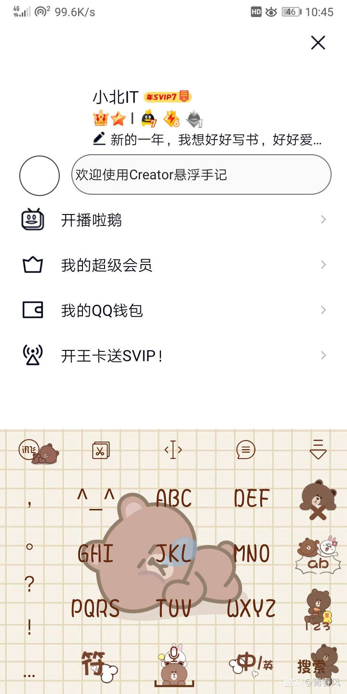
展开输入框状态
方法一：
通过点击开关按钮来收拢↔展开输入框，框内文字会保留。
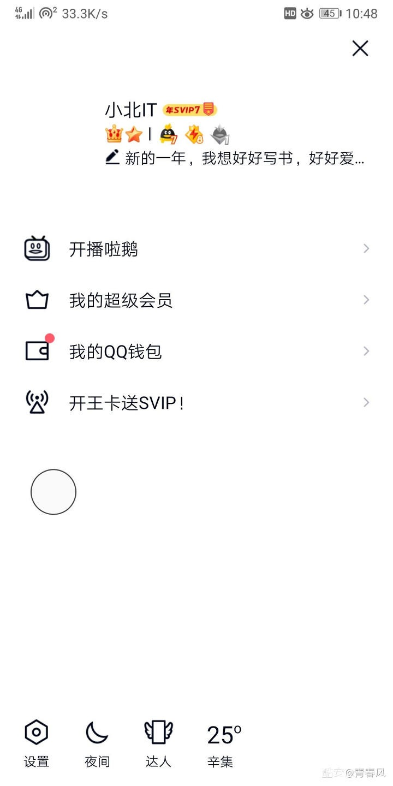
- 方法二：
输入法敲回车来收拢输入框，会自动复制并清空输入框里的内容。
这个方法方便取出文字，又可快速进行下次录入。
移除悬浮窗
长按开关按钮，即可移除悬浮窗。
移动位置
如果需要拖动位置的话，识别区域在悬浮窗底边框往下的位置 ，注意不是完整的悬浮窗！是下边！
手指按下去，拽动即可：
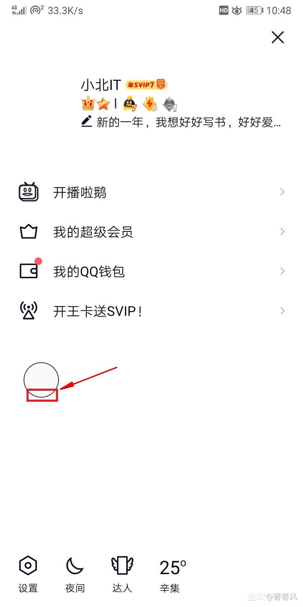
注：作者个大粗手。位置标注的不准确，是圆圈和开关按钮解除的位置。。。
图片已重新编辑。
书堆功能
你可以在
Creator主界面的左上角看到书堆按钮，回溯模式、无痕只读的底部滚动栏里也能看到它，很多童鞋忍不住要问一句：咋哪都有它？
何用之有？
我们先来分析一下它是干嘛用的。看过前边我写的入坑指南的小伙伴应该听说了Creator的存储模式：
对于同一篇文章，它分为当前版本和历史版本两种模式。
细分的话，若是你没有对这篇文章进行命名保存，它的当前版本就是文章最后编辑的状态，这是根据最后自动保存的时间而言。
而如果你将它归档保存到了一个书堆里，那书堆里也会有一个当前版本，这是对于手动更新书堆的时间而言。
无论你是否创建书堆并选择书堆、设置文章标题、文章归档（一键三连），都可以实现类似Git仓库中当前版本的模式。
但是归档后，就可以分层级、自定义名称了，而不是一篇一篇的去找那些自动保存的文章。
这样可以方便你查找及再次编辑文章。
何以用之
- 首先，Creator不会自动生成任何书堆，需要你自己动手创建：
主界面：
菜单-新建书堆回溯模式：底部滚动栏的热键
目录无痕只读：底部滚动栏的热键
目录
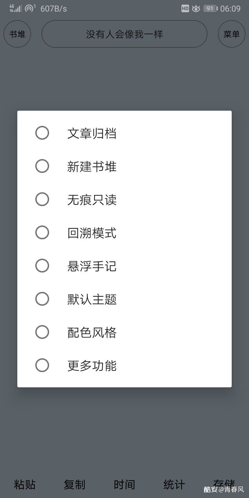
新建书堆
支持多层级，用/隔开，如：User/日常
创建后它就算是“存在”了，点击书堆按钮就能查看当前路径下有哪些书堆：
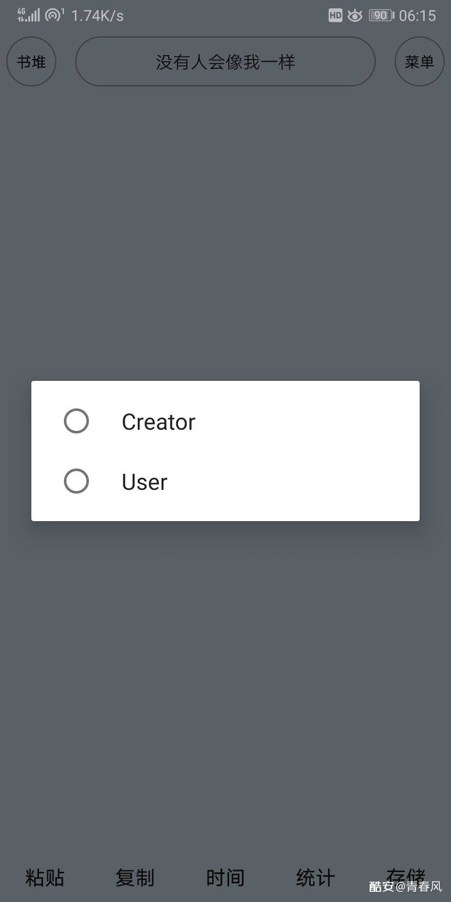
比如说当第一次点击书堆按钮，可以看到一级书堆User，选择便是进入了这个书堆。
再点击一次这个书堆按钮，即可看到User里的二级书堆日常：
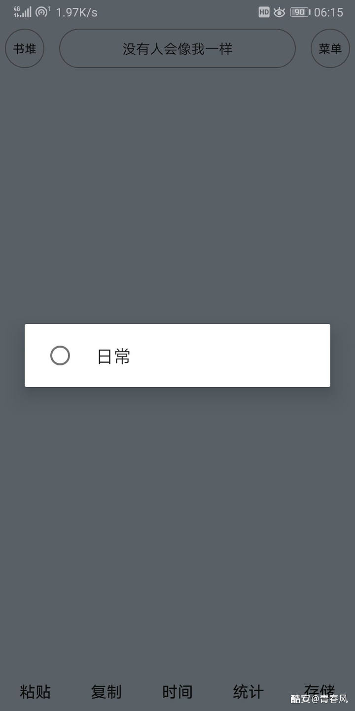
每次点击可以深入一层，而没有后退功能。
平常最多也就生成五六层吧，并不会很多，所以一律都是：
长按
书堆按钮，回退到书堆根目录。
然后就可以选择（进入）其他书堆了。
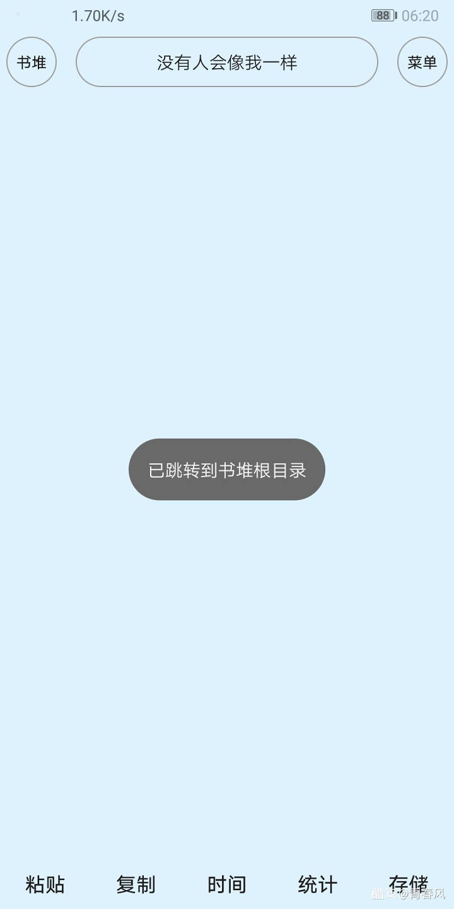
选择哪个书堆，存档时进把文章保存进了哪里。 这一点需要特别注意。
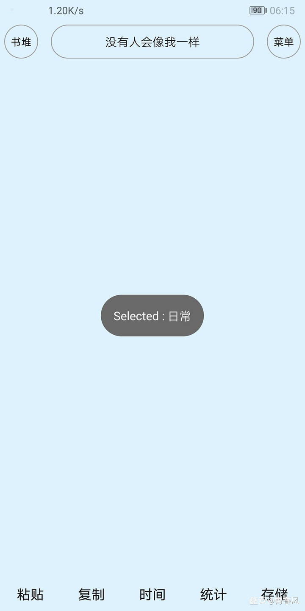
进入书堆
因为保存文章需要用户自己设置文章名，而界面顶部的文本框就是用来显示文章标题的，
因此设计为：
长按顶部文本框，设置文章标题。
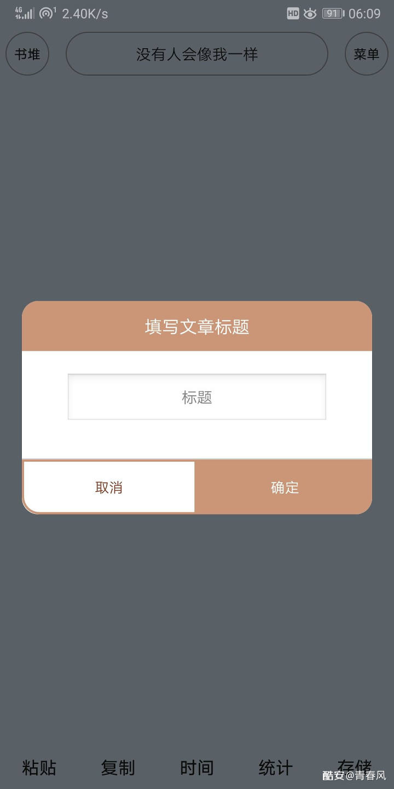
当你选择（进入）书堆，并设置了文章标题，便可以使用归档功能了。
位置：
主界面：
菜单->文章归档回溯模式：底部滚动栏的热键
存档无痕只读：底部滚动栏的热键
存档
如果你选择（进入）的书堆里已经存在了同名文章，当你进行文章归档时，会询问是否要覆盖该文件。
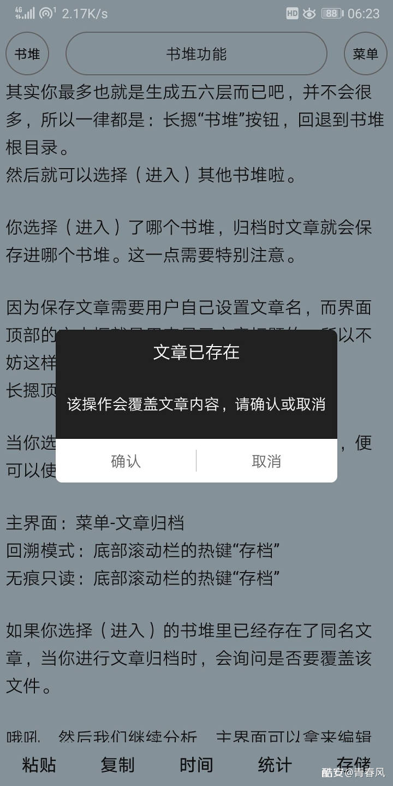
哦吼，然后我们继续分析，主界面可以拿来编辑已归档的文章，无痕只读里可以查看已归档的文章（也允许编辑，但不会衍生版本分支，也不会自动保存，按需使用），那肯定要满足一个前提：
查看已选书堆里有哪些文章，并可以打开其中一篇。
如果你还记得上边我说的是“长按顶部文本框，以设置文章标题”，那现在你已经猜出来我要说什么了吧：
点击顶部文本框，用于查看当前书堆里有哪些文章，选择其中一篇便可打开。
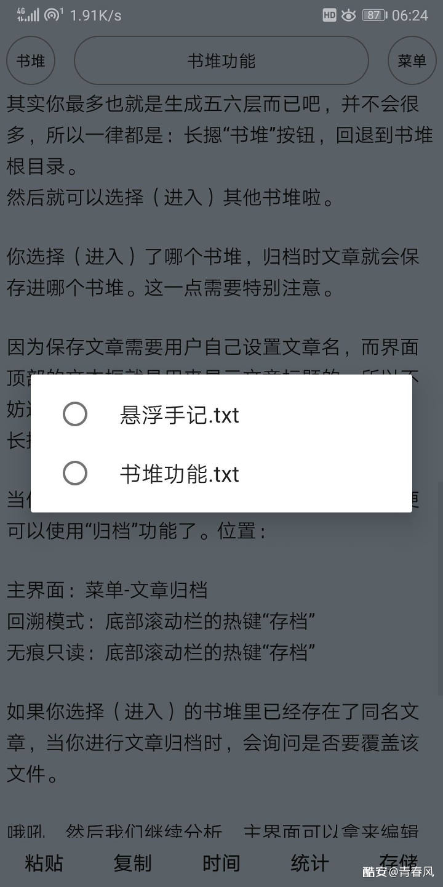
回溯模式
Creator主界面拿来编辑文章、文章归档，那如何查看所谓的历史版本呢？一切都很简单：
回溯模式。
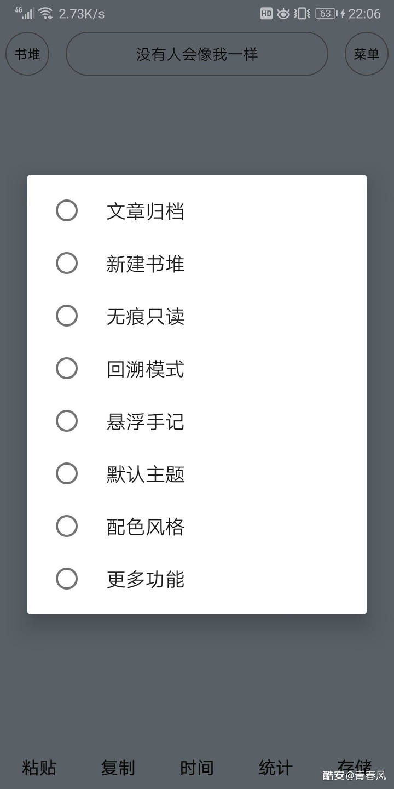
查看文章
主界面菜单->回溯模式，然后点击左上角的文章按钮，会展示一个列表，你编辑的每一篇文章都在这里（Creator目录）。
注：
移除了的除外
你可以选择一篇文章，或点击左下角的回退、前进（上/下篇文章）来找到所需文章。

文章列表
别问为什么有自定义名字，开发者不怕出事，用文件管理器改的。
注：后期或将主动支持重命名。会进行通知。
点击顶部中间的文本框，便可以看到该文章的全部历史版本（History目录）：
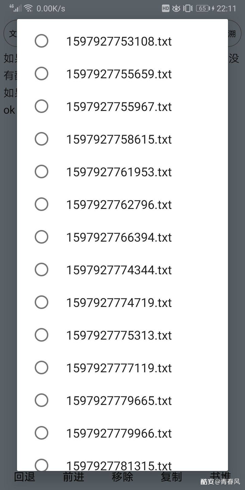
全部历史版本
可以点击右上角的回溯按钮，按钮内容变为跃点。
这时候点击顶部文章标题，便可显示该文章的自定义历史版本（FlySave目录）
注：仅当点击过
存储按钮方生效
效果如下图所示
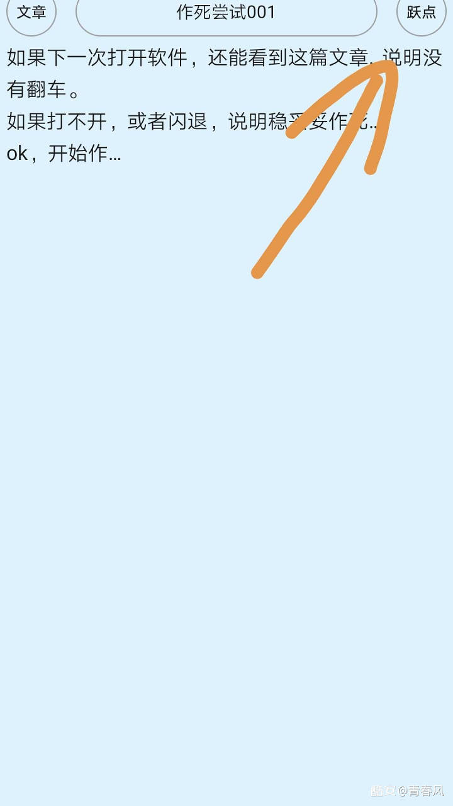
自定义历史版本
方便筛选：
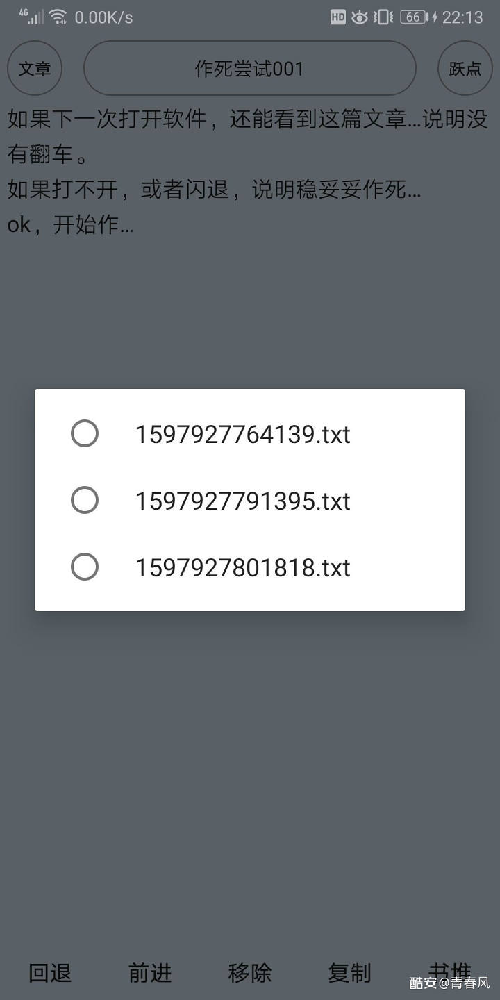
历史版本列表
长按右上角跃点（或回溯），提示查看历史版本：
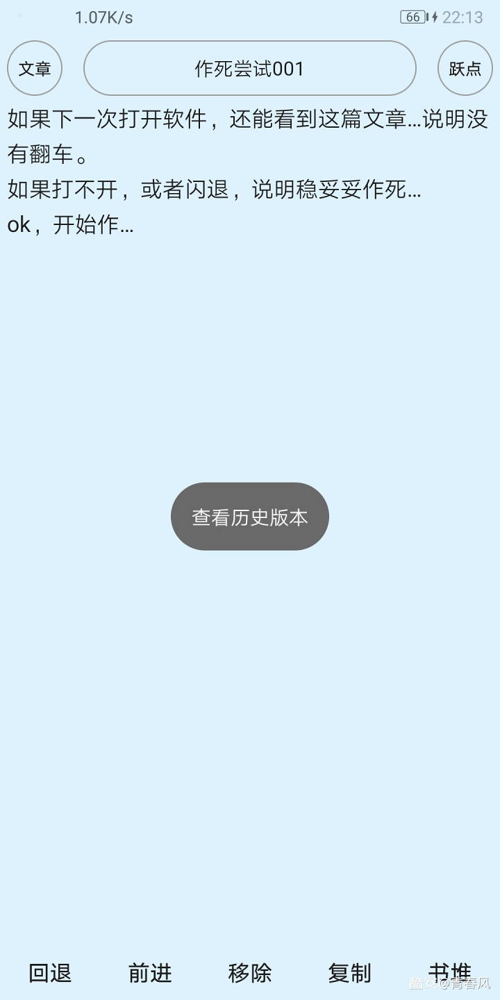
查看历史版本
然后左下角的回退、前进就改成加载该文章的上/下个历史版本，找到该文章所需的历史版本即可：
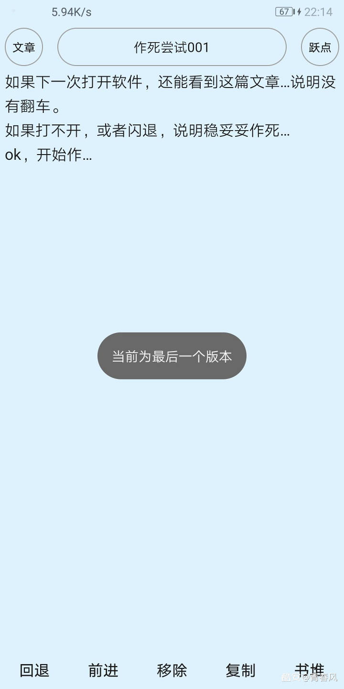
回退/前进
注：再次长按右上角
跃点（或回溯），提示加载文章列表，然后左下角的回退、前进就恢复成查看上/下篇文章的功能了。
找到文章的所需历史版本后，可以进行归档。
举例：
长按顶部中间的文本框，输入文章名称作息时间：
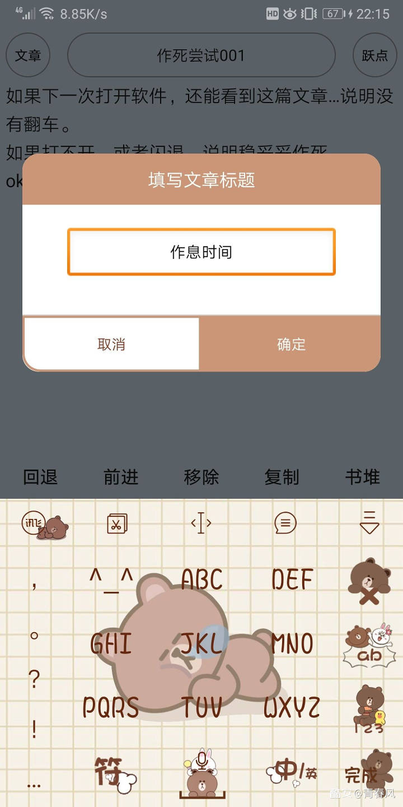
长按顶部文本框
点击底部目录，新建一个书堆。如果需要嵌套多层级的书堆，用/隔开，如：User/日常。
注：
多级书堆可以类比各操作系统的文件夹。
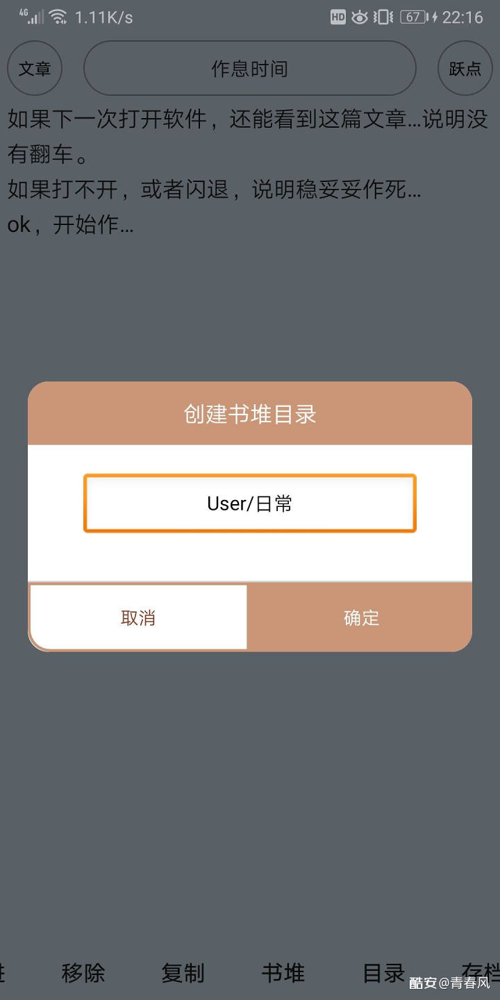
点击底部目录，点击底部的书堆->选择User：
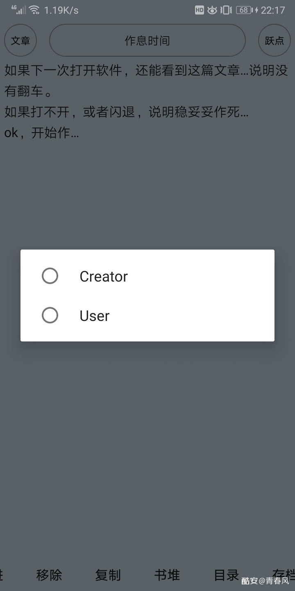
进入一级书堆，再次点击书堆、选择日常：
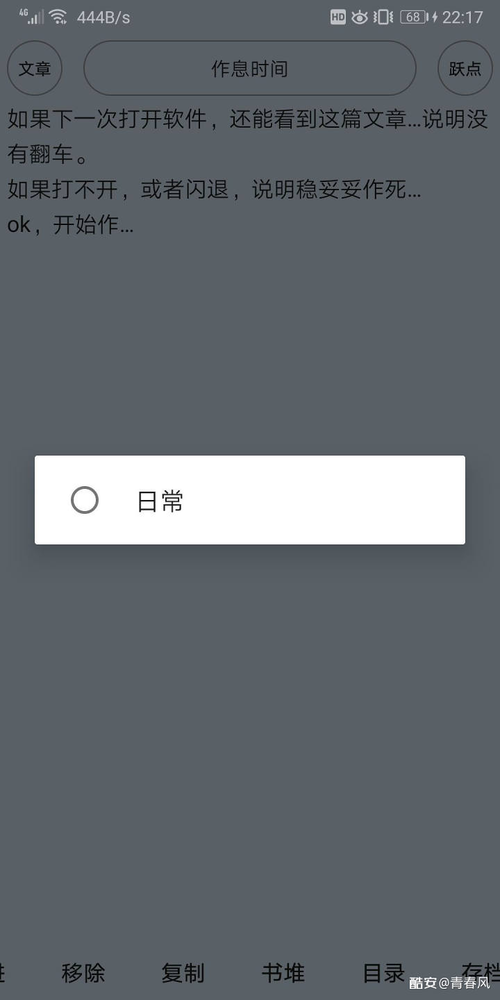
选择哪个书堆，存档时进把文章保存进了哪里 ，需要注意一下！
例如：
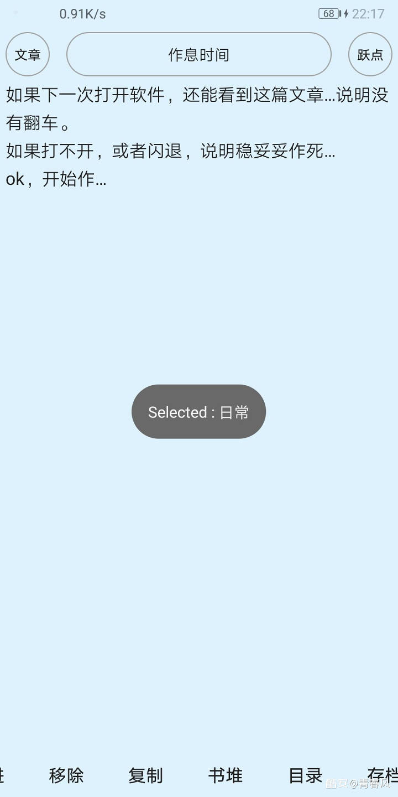
选择日常书堆，点击存档，便会在User下的日常书堆里创建作息时间.txt，内容即当前的文章内容。
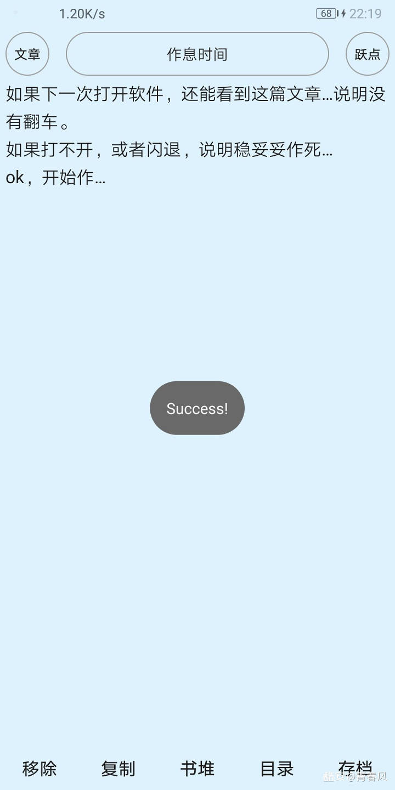
文章归档
如果该书堆下已存在同名文章，归档时会询问是否覆盖
注：再次提醒，选择（进入）了哪个书堆，存档时就把文章存到了哪个书堆
相关链接
本文系酷安评论区教程整理所得，相关链接如下。
| 序号 | 链接 | 标题 |
|---|---|---|
| 0 | https://www.coolapk.com/apk/app.creator | 酷安Creator下载 |
| 1 | https://www.coolapk.com/feed/21087077 | Creator入坑指南 |
| 2 | https://www.coolapk.com/feed/21094512 | Creator悬浮手记 |
| 3 | https://www.coolapk.com/feed/21114958 | Creator书堆功能 |
| 4 | https://www.coolapk.com/feed/21134360 | Creator回溯模式 |